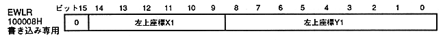
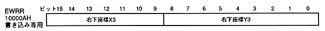

Return to previous page ｜ Return to menu ｜ Go to next page
-
■ Erase light upper left coordinate register
- Erase light upper left coordinate register (EWLR, Erase write left coordinate register) sets the upper left coordinate of the erase light area. This is a write-only 16-bit register at address 100008H. Since the value will be undefined after turning on the power or resetting, be sure to set the coordinates. Set unused bits to 0.

- Erase light upper left coordinate X1: bits 14-9
- Erase light upper left coordinate Y1: bits 8-0
-
■ Erase light lower right coordinate register
- Erase light upper right coordinate register (EWRR, Erase write right coordinate register) sets the lower right coordinate of the erase light area. This is a write-only 16-bit register at 10000AH. Since the value will be undefined after turning on the power or resetting, be sure to set the coordinates.

- Erase light bottom right coordinate X3: Bits 15-9
- Erase light bottom right coordinate Y3: Bits 8-0
-
- Specify the fill area of the frame buffer during erase write.
- The X coordinate is set in units of 8 pixels for 16 bit / pixel (normal, rotation 16, HDTV), and in units of 16 pixels for 8 bit / pixel (high resolution, rotation 8). When the system register value is 1, it is 8 or 16.
The actual X coordinate at the lower right is the value obtained by subtracting 1 from the register setting value multiplied by 8 or 16.
- Y coordinate is set in units of one line. Since double-dense interlacing is twice the Y coordinate register setting value, set 1/2 of the actual coordinate value. For example, when the setting value is 223, the coordinate value is 447.
- The actual X coordinate is given by
- 16bit / pixel
- Upper left coordinate X1 = Register set value x 8
- Lower right coordinate X3 = Register set value x 8−1
- 8bit / pixel
- Upper left coordinate X1 = Register set value x 16
- Bottom right coordinate X3 = Register set value × 16-1
Return to previous page ｜ Return to menu ｜ Go to next page